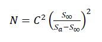
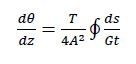
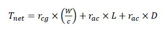
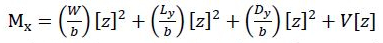
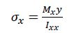
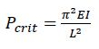

The primary goal of any wind turbine design is the longevity and durability of turbine blades. Turbine blades need to sustain high magnitudes of stress for a large number of loading cycles in order to be cost effective. Estimating the lifespan of blade components or system involves multiple steps including determining the expected stress, the type of loading experienced by individual components, determining how airflow impacts the blade, and estimating the number of loading cycles that can be survived.
Number of Loading Cycles Survived
The number of loading cycles that can be sustained is estimated with this equation. It is important to note that this would be the final step in our analysis, as the stresses would need to be computed using CFD, FEA, and standard equations. After that, this equation is used where:
- N is the number of loading cycles sustained
- S∞ is the fatigue limit of the material
- Sa is the stress amplitude for a single loading cycle
- C is a material constant
Torsion of Spars
A critical contribution to the maximum stress of the spar structure is the torsion experienced by the twisting action of the blades, as well as uneven distribution of lift on the blade itself. Weight reduction of the blades is a signifcant goal, and therefore thin-walled spars were determined to be used within the blades. The shear strain as a result of torsion in these thin-walled spars is given the equation to the right where:
- θ is the angle of twist
- z is the axial distance along the spar
- T is the torque endured by the spar
- G is the shear modulus of the spar
- t is the tickness of the spar
- A is the cross-sectional enclosed area
The equation on the right is how the torque will be determined from a single spar. It utilizes components of lift nad drag on the blade through a cross-product. This equation is more applicable to general sizing than a final analysis, where computational tools will be used. The variables here are:
- Tnet is the net torque
- rcg is the distance to the center of gravity of the cross section
- rac is the distance to the aerodynamic center of the cross section
- L is the overall lift
- D is the overall drag
- c is the chord length of an airfoil section
- W is the weight of the blade
Bending of Blade Spars
The equation to the left indicates how bending moment along a spar will be roughly calculated. The bending moment from weight and aerodynamic contributions will be significant and changing during blade rotation. These variables are:
- Mx is the bending moment
- Ly is the local y-component of lift
- Dy is the local y-component of drag
- b is the span of the blade or spar
- V is the internal shear force
From the bending moment equation above, we can determine the bending stress with the equation to the left. Similar equations exist for examining bending stress along other coordinates, as well as asymmetric bending. It is important to note that asymmetric bending can occur as Ixy is non-zero for asymmetric cross-sections. The new variables here are:
- σx is the bending stress
- Ixx is the moment of inertia
- y is distance along the cross section where stress will be examined
Bucking of Spars
The buckling of spar sections is another concern as the blades will find themselves in a vertical position as they rotate, and therefore experience the weight of themselves. It is important to estimate what the minimum buckling load is and ensure that the weight does not exceed this load. The formula on the right gives this estimate where:
- Pcrit is the critical buckling load
- I is the moment of inertia
- L is the length of the spar in question
- 𝜋 is a universal constant
Sowtware Use
With the anticipation of a control system rapidly changing the direction of the wings in the flow field, it is important to use some computational fluid dynamics software to ensure loss of lift, high drag, stall and flow separation do not occur during the blade rotations. Open Source projects such as OpenFOAM or SU2 are powerful but are difficult to set up. The control system can also be used to avoid these scenarios, and are therefore not as important to analyze. Commercial packages for the finite element analysis, such as Creo Simulate, are already familiar and are the likely choice to examine the stress and deformation characteristics under various rotation stages.
Analysis Results
As we develop our computational models, we'll post updates here to display our results. We intend to document what we learn from our basic and advanced analysis techniques, and discuss how they influence any changes in our prototype. Changes made to the prototype will also be available on our Prototype Update page.